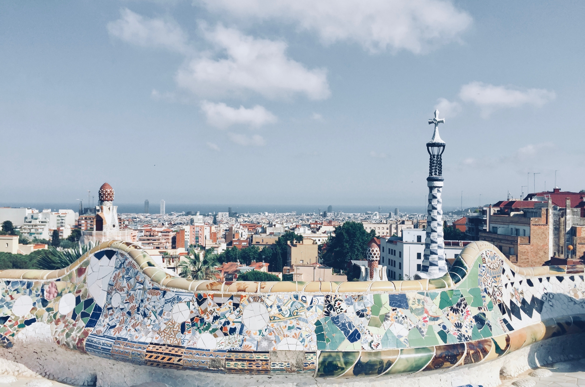

Cykeltur: Destination Norr
Under en heldag hyrde jag cykel för att ta mig till den norra delen av staden, där jag bland annat besökte populära resemål såsom den berömda ”Parc Güell” och fotbollsarenan Camp Nou. Något man bör vara medveten om när man väljer att ta cykeln i Barcelona är att trafiken där inte är på något vis lika regelrätt och försiktig som den vi är vana vid här i Sverige. Man bör därför vara på sin vakt, men självklart finns både bra och framkomliga cykelleder genom hela staden. Med en karta i högsta hugg är staden lättnavigerad.

Parc Güell är ett populärt resemål i norra Barcelona. Parken grundlades och skapades av arkitekten Antonio Gaudí, vars verk kan skådas över hela Barcelona.
I parken kan man enkelt spendera en heldag och vandra runt bland dess vackra utsmyckningar.
Flera olika saker finns att göra, bland annat gatumusikanter som underhåller gästerna, mat som finns att köpa samt museum att besöka.
Mer info hittar du här: Park Güell
På min cykeltur passade jag också på att åka förbi Camp Nou, arenan till kanske världens populäraste fotbollslag, FC Barcelona.
På området finns sportshop, museum och café. Priserna för fotbollsbiljetter varierar stort beroende på vad för lag som spelar etc.
Mer info hittar du här: Camp Nou